The ISU main site contains many "sub-sites", which are smaller sections within the site that fit within the whole site hierarchy, but are self-contained sections of the site. For instance, "Office of the President" is a sub-site that's located within the "About" section of the site. These sub-sites need their own controlled navigational menu that appears on basic pages. This documentation describes how to set these menus up.
The first step in the process is to create a piece of content using the basic page content type. In the meta-data fields at the bottom of the creation form, the most important section for content writers and editor will be to configure a menu item for the page.
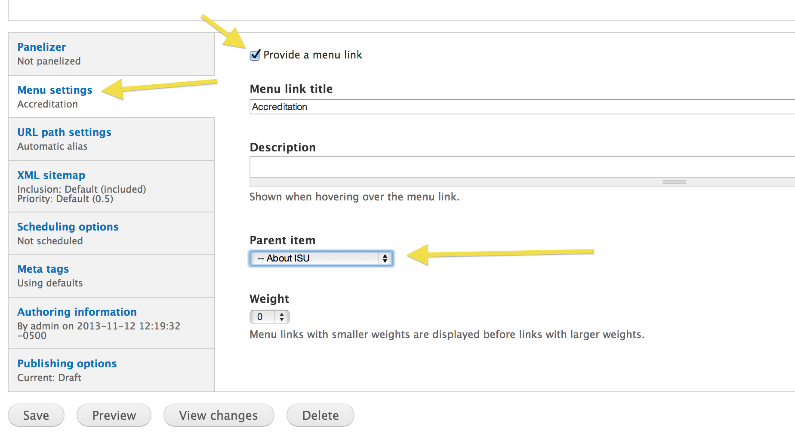

Once this is done, when the page is published, a new menu item will appear in the location you set it there.
This step can be done by content writers and editors.
The second step in the process is to ensure that the page's url path fits properly in the path structure hierarchy of the sub-site you're creating. The path structure should be such that you have a parent page that represents the sub-site homepage and any sub-site inner pages will be placed under that path.
/about/accreditation/about/accreditation/accreditation-programsThe url alias path can be manually overwritten in the page metadata tab entitled "URL path settings". However, in most cases this is unnecessary.
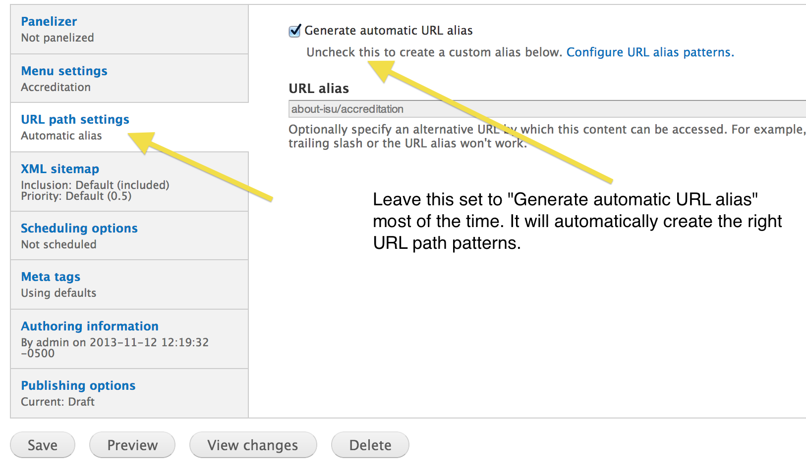
Drupal has path alias patterns that are configured as the defaults. For the basic page content type, the default pattern is to use the menu link structure to determine the path. When using the example above, if you are creating the "Accreditation Programs" inner page to the "Accreditation" sub-site, you only need to ensure that the menu item properly selects the "Accreditation" page as its parent menu item. The resultant path will be automatically created as:
/about/accreditation/accreditation-programs
This step can be done by content writers and editors.
After creating the basic page nodes to fill out the content pages of the sub-site (or at any point after the parent homepage of the sub-site is created), you'll create a menu block specific to this sub-site. This menu block will be configured to filter the main menu to only display the menu items inside the sub-site.
To do this, navigate to the add menu block form:
/admin/structure/block/add-menu-block
In this form, set it up to display your sub-site menu inside the main menu. You do this by:
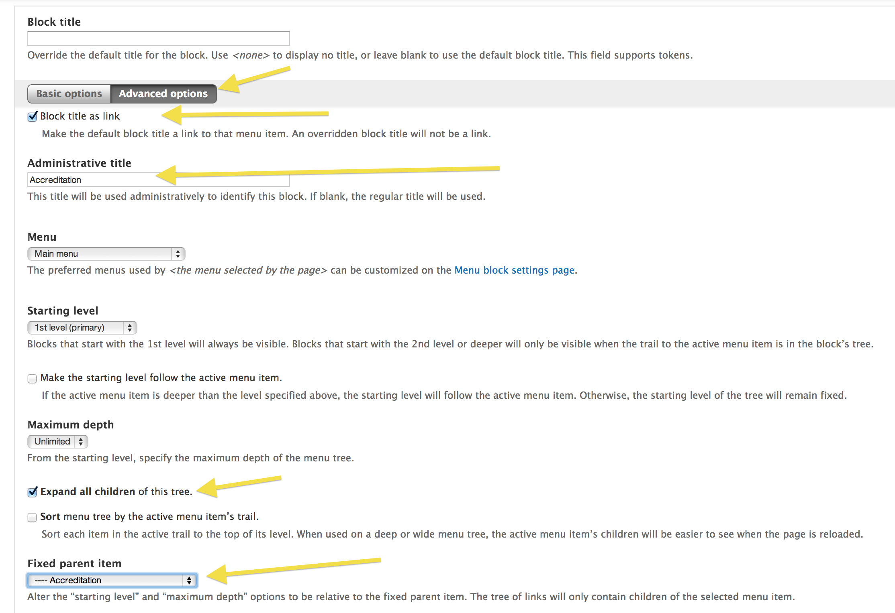
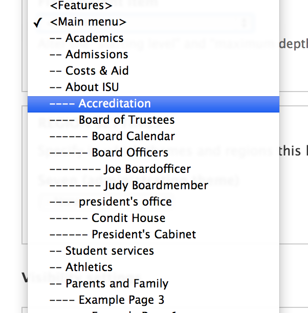
This configuration creates the menu block for your sub-site and makes it available to you for placement.
This step needs to be done by content administrators or managers with sufficient Drupal training.
Once the menu block for the sub-site is created, all you have to do is place it where it needs to display. In most cases, this means adding it to the default Panels template for Basic Page nodes. This can be found at:
/admin/structure/pages/nojs/operation/node_view/handlers/node_view_panel_context_3/content
Add the menu block to the "Right" sidebar region.
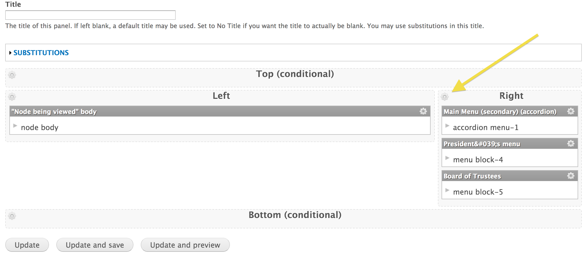
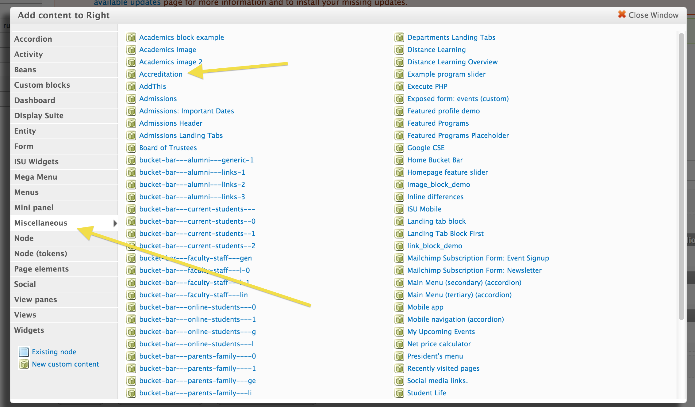
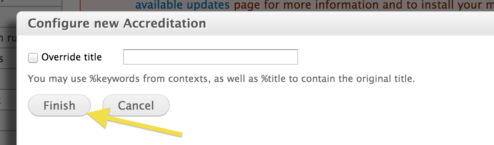
Configure the menu block visibility settings
Select the gear icon of the block itself
Under "Visibility rules" select "Add a new rule"
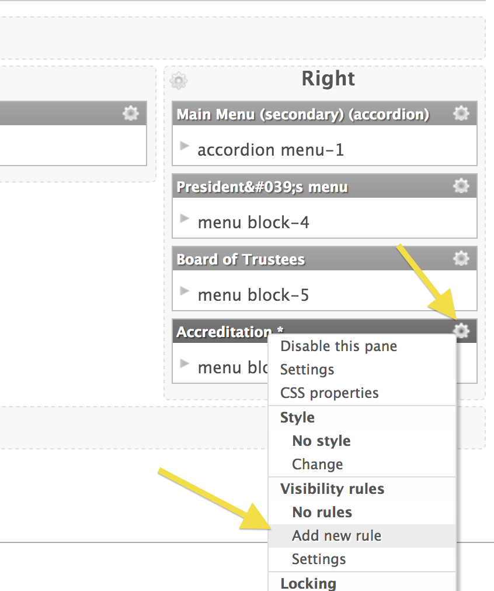
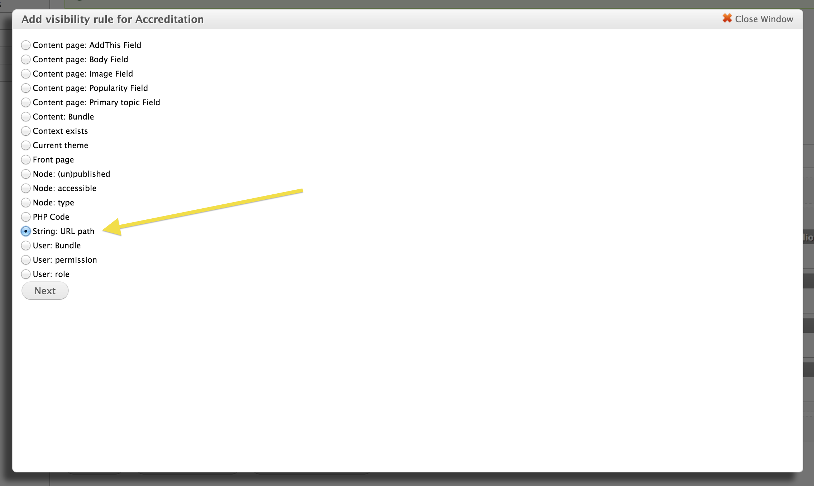
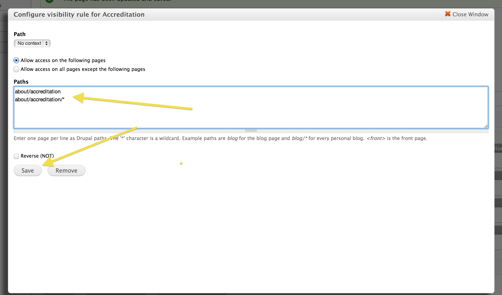
Save the panels configuration and view your accreditation node to find the menu placed appropriately.
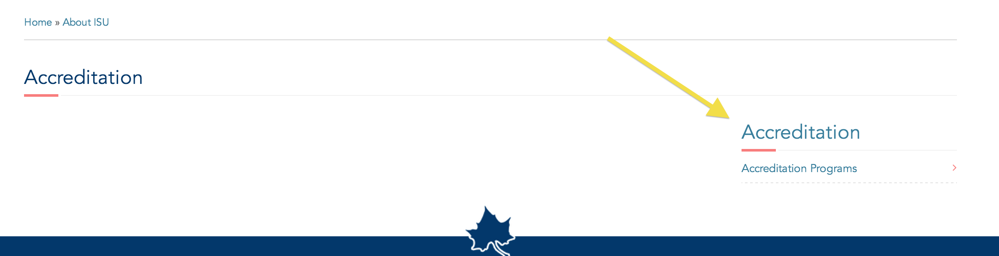
This step needs to be done by content administrators or managers with sufficient Drupal training.